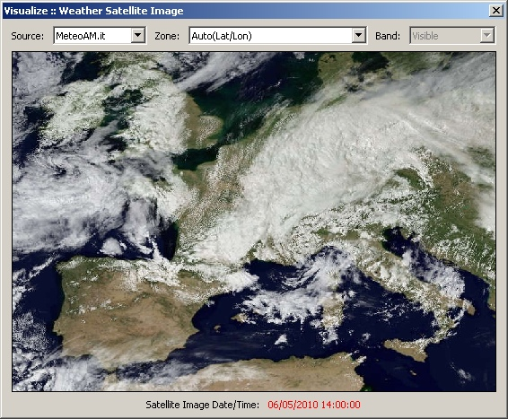
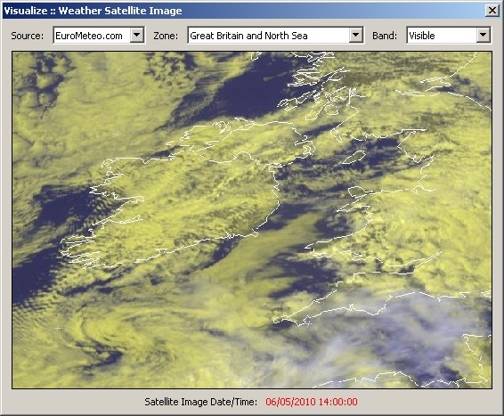
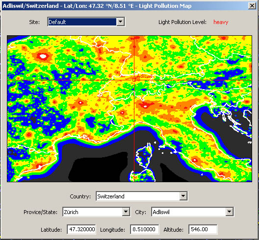
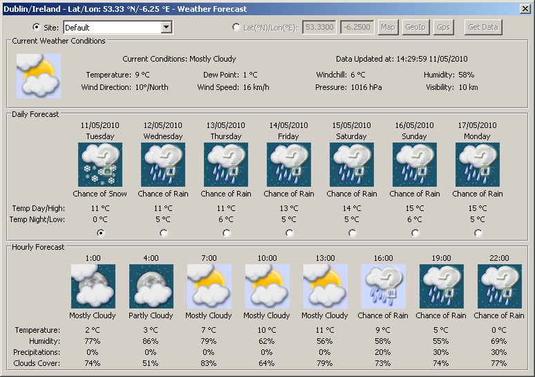
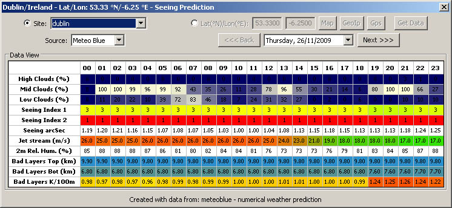

This is a collection of tools to give you hints about current weather and forecast - depends on your location you can get up to 10 days forecast as well as a daily forecast every 3 hours. There is also an weather satellite view with data from three different providers which will select your view based on the site settings. On top of that you have an astronomical seeing prediction for both north america and europe (and perhaps will cover other parts of the world - I have not test it yet). | |
|
Weather Europe - current satellite view  | |
|
Weather Ireland - current satellite view  | |
|
Interactive World Wide Light Pollution map  | |
|
Weather Forecast Screen  | |
|
Seeing prediction - 48h - for North America with ClearSky 
| |
|
Seeing prediction - 7days - for Europe with Meteo Blue  | |